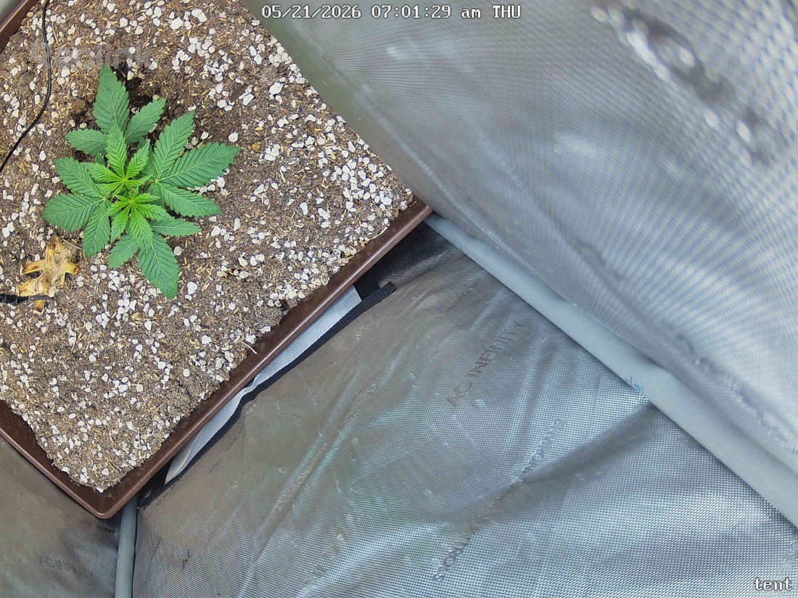

← All reports
May 21, 2026
Thu May 21, 2026 — 7:01 AM

Prognosis
Daily check-in — papaya crush, day ~23 from germ
- Growth: Visible new node and broader fan-leaf expansion overnight — the upper-center cluster is fuller and the newest serrated leaves are larger/more defined than in the 05/20 evening shot. Lateral spread has widened noticeably.
- Color: Uniform medium-deep green across all leaves; no pale newgrowth, no dark/clawed older leaves. Same healthy tone as yesterday.
- Structure/posture: Leaves flat, slight upward "praying" tilt on the youngest pair — classic happy response to the 400 PPFD bump, no tacoing or curl. Stem still short and stocky, no stretch.
- Stress signs: None. No tip burn, no interveinal yellowing, no edge necrosis, no spots, no pests/webbing visible. The yellow leaf at lower-left is the same dropped cotyledon/early-leaf from prior shots — not new damage.
- Soil: Surface looks evenly moist-to-dry, perlite distribution unchanged, no algae/mold, no gnats visible. Old stump area untouched (correct per no-till).
- Phase check: ~23 days from germ, ~16 days in tent — you'd expect 3–4 true node pairs and the start of real lateral fan development, which is exactly what's here. Slightly on the compact side from the strong light, which is a good thing at this stage.
Next actions: No action needed. Hold at 400 PPFD; if leaves stay flat and dark over the next 2–3 days, you've got headroom to step toward 450–500 when ready.
Overall: Textbook healthy late-seedling/early-veg — keep doing what you're doing.